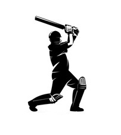

Jadhavji

Kedar Jadhav
Born
Mar 26, 1985(35 years)
Birth Place
Pune
Role
Batting Allrounder
Batting Style
Right Handed Bat
Bowling Style
Right-arm offbreak
ICC Rankings
Career Stats
| Format | Matches | Innings | Runs | High Score | Avg | Balls bowled | Wicket | Bowling Avg |
|---|---|---|---|---|---|---|---|---|
| ODI | 73 | 52 | 1389 | 120 | 42.1 | 1127 | 27 | 35.96 |
| T20I | 9 | 6 | 122 | 58 | 20.3 | -- | -- | -- |
| IPL | 79 | 70 | 1079 | 69 | 22.9 | -- | -- | -- |
Profile
Kedar Mahadev Jadhav is an Indian cricketer who plays for Maharashtra and the Indian national cricket team. He is a batting all-rounder who bats right-handed and bowls right-arm off-breaks and occasionally keeps wicket. In the Indian Premier League, he plays for the Chennai Super Kings, having previously played for Delhi Daredevils, Royal Challengers Bangalore and Kochi Tuskers Kerala.
Jadhav made his One Day International (ODI) debut for India against Sri Lanka on 16 November 2014 and his T20I debut for India against Zimbabwe on 17 July 2015.
In January 2017 Jadhav scored 120 off 76 balls and shared a 200 run partnership with captain Virat Kohli to help India to register a win against England on his home ground. In the third match of the same series, he scored 90 runs and almost guided India home in a pursuit of 320. He was dismissed in the second last ball of the innings, and although, India lost the match Jadhav had by then firmly established his place in the middle order and was awarded the Player Of the Series award, having scored 232 runs in the series. Jadhav went on to represent India in the ICC Champions Trophy 2017 and has been an integral part of the Indian team since.